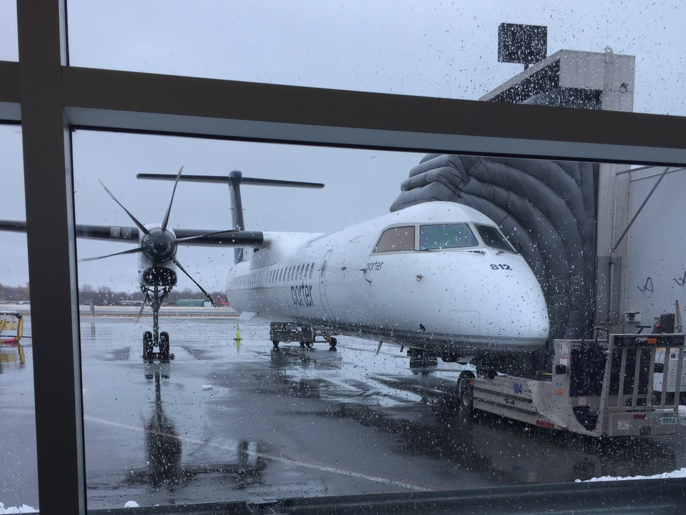

Me
Me
April 16
The Adventure Begins
Day 1:
After a car ride from Kitchener to Pearson airport, train from Pearson to Union Station, shuttle bus to Billy Bishop Airport, flight to Dulles International Airport, shuttle to a metro station and a rush-hour metro ride, I finally made it to DC!
On this journey, I had a lot of time to reflect and think about what the next 4+ months had in store for me. Over the last 4 years, I’ve spent approximately 1/4 of that abroad, once for an 8-month straight period. I’ve done long-haul trips before, so why was I feeling anxious and nervous for what lay ahead?
Leaving the comforts of home, the support of family and friends and the familiarity of everyday life is scary – but it is also extremely exhilarating! In these next four months, I’m going to be travelling to places that have long been on my bucket list, interact and hear from individuals I never would have imagined, learn new languages and cultures, revisit beloved places and explore new ones.
On previous adventures, I’ve found I’ve had a hard time articulating and sharing my experiences with friends and family upon my return, so through this blog I hope I can share my experiences in a more timely manner and bring you into my day-to-day life while on the road.
I look forward to interacting with you on my journey!
First stop: Washington, D.C.
Next Blog Post: The Spring Meetings Begin